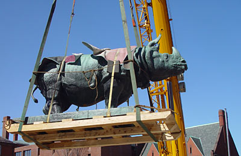

News Archives : 2005 : The Return of the Rhinos
by Charlie Schmidt
May 19, 2005
Truth be told, Bessie and Victoria were removed for protection during construction of Harvard’s new mouse research facility. Located underground below the Bio Labs’ courtyard, this facility will house 30,000 cages when it’s completed later this year, making it one of the largest of its kind in the United States.
The rhinos spent their sabbatical from Harvard in a climate-controlled art storage facility in South Boston. They were returned to Harvard in late March and can once again be found standing guard on either side of the Bio Labs’ main entrance doors. One could speculate they’re happy to be home. Their many admirers are certainly pleased to see them. A familiar presence since the 1930s, the rhinos are deeply entrenched in the Bio Labs’ lore and traditions. Nobel Prize–winning biologists have been photographed at their sides. Halloween pranksters love to dress them up—an indignity the stoic pair seems to take in stride. And volleyball games in the courtyard are played for the coveted "Rhino Cup."
The Rhinos’ Arrival
Bessie and Victoria were created by Katherine Lane Weems, a young sculptor whose representations of animals had won her awards and wide acclaim. She was commissioned in 1930 by Harvard President A. Lawrence Lowell to embellish the exterior of the new Bio Labs, which were under construction at the time. Few extravagances were spared during the creation of the Bio Labs, which were funded by a lavish gift of $2 million from the Rockefeller Foundation. This extraordinary sum was made even more so by the effects of the Great Depression, which had lowered wages and material costs. Once underway, Weems’s work at the Bio Labs proceeded in three main phases: First, she designed a frieze of animals representing four of the world’s zoographic zones and had them carved into the brick parapet just above the upper tier of windows. She then created the Bio Labs’ three main entrance doors, which are adorned with various species inhabiting the earth, the air, and the sea.
Bessie and Victoria were Weems’s third and most striking contribution. Photographs taken in 1932 show the Bio Labs’ ornate doors flanked by a pair of empty pedestals. At the time, the architect’s only conception was that the pedestals should be mounted with some sort of large beasts. "The Harvard professor who was leading that effort [George Agassiz] asked Weems what would be appropriate and she said ‘rhinos,’" explains MCB Director Javier Balloffet with a chuckle. "It’s hard to imagine a 30-year-old artist being given that kind of latitude and authority," he adds. "And yet the rhinos have been a wonderful resource."
It took five years to sculpt the pair, which were finally delivered in 1937. Both depict the Indian species Rhinoceros unicornis equal in size to the largest specimen ever recorded. Bessie and Victoria are morphologically accurate, weigh three tons apiece, and are among the largest bronze sculptures cast in the twentieth century. They have been, and will likely always be, the building’s most distinctive feature.
 |
|
Dislodging the Rhinos
Leaving the rhinos in place during construction of the mouse facility was out of the question, Balloffet says. "We knew we couldn’t endanger them. We thought about encasing them in boxes but the clearances were inappropriate." The only practical solution, he concluded, was to move them offsite altogether.
Making that decision was easy. Moving the rhinos, however, was not. Just determining how they were attached to their supporting plinths took two days. By removing some bricks and peering at the connection with an endoscope, workers could see that Bessie and Victoria were secured by brass pins that had been encased in mortar and tar. All this material was carefully chipped away and then the bronze beasts were gently lifted from their mounts by crane. Once freed, they were laid on a specially designed cradle and trucked off for storage.
Hired for this formidable task was Fine Arts Enterprises, a South Boston–based company that for 25 years has moved famous artworks located throughout the world. FAE’s president, Larry Doherty, says moving the rhinos wasn’t the company’s biggest job ever, but he does concede it was among the most challenging. Next time should go easier, he adds. Doherty jokes there will be a next time, even if he’s not around to see it. "I’ve spent half my life moving things that were supposed to be installed forever," he says. "In my experience, forever is between 8 and 12 years. We put things back so they can be easily moved again."
Past Meets Future
Soon, the construction debris will be swept away, the volleyball net will be back in place, and Bessie and Victoria will gaze out over a courtyard much the same as it was when they arrived, decades ago.
The scene under the courtyard will be altogether different, however. Two stories of ultra-modern research space with floor-to-ceiling heights of 20 feet each will exist there. The whole structure will house 35 procedure rooms and provide capacity for hundreds of thousands of mice. Ventilation systems will replace all the air in the facility 8 to 10 times per hour every day of the week. Access will be provided to researchers from throughout the Faculty of Arts and Sciences. While there, these scientists will create and use genetically modified species to advance disease cures and a greater knowledge of cell and molecular biology.
But atop this high-tech wonder, Bessie and Victoria will remain, as they have for 70 years. The pair are symbols of continuity; a reassuring presence from an earlier time, before genomics and modern research tools put biology on an ever-accelerating fast track. It may not come as a surprise, then, that the rhinos’ absence was felt as strongly as it was. Nor perhaps is it unusual that their return was met with such welcome satisfaction.